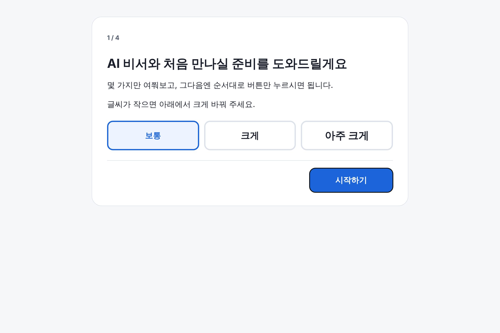
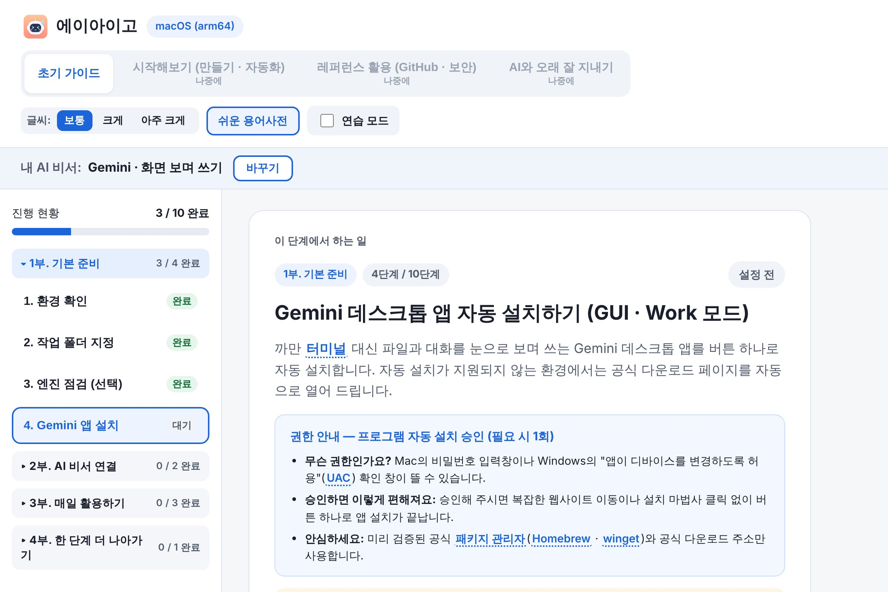
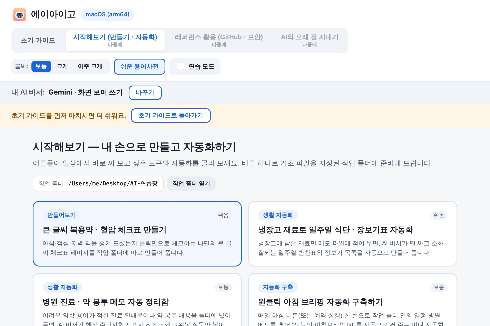
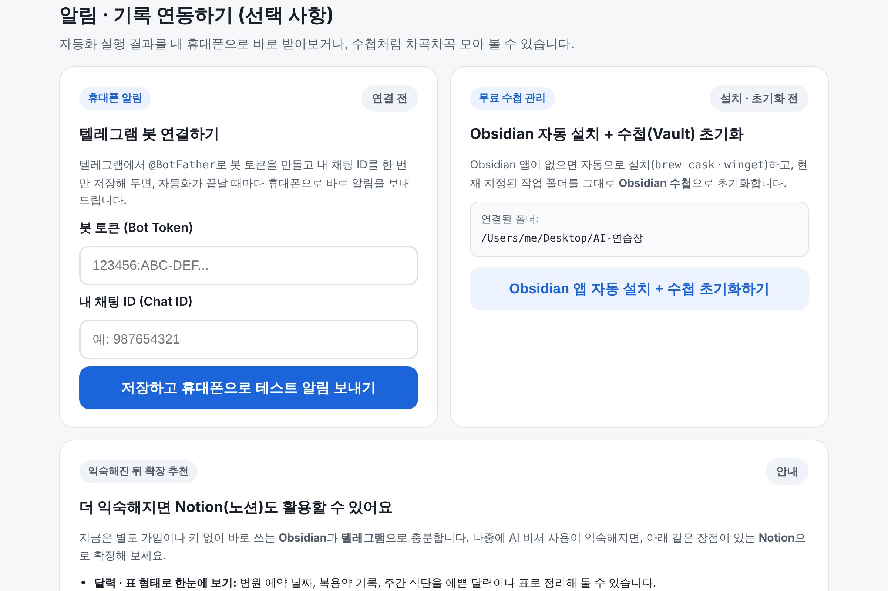

에이아이고 앱
AI 첫걸음을 차근차근 알려 주는 무료 컴퓨터 앱이에요. 웹에서 맛본 다음 단계를, 앱에서는 버튼을 눌러 가며 이어 갈 수 있어요. 아래는 실제 앱 화면이에요.

처음 켜면, 글씨 크기부터몇 가지만 여쭤보고, 그다음엔 순서대로 버튼만 누르시면 돼요.

AI 프로그램 설치를 차례대로왼쪽 단계를 따라 버튼을 누르면 Gemini 같은 AI 프로그램 설치와 로그인까지 도와드려요. 설치 승인 창이 뜨면 확인만 누르세요.

생활에 바로 쓰는 레시피복용약 · 혈압 체크표, 일주일 식단과 장보기표, 병원 메모 정리, 아침 브리핑을 버튼 하나로 준비해요.

휴대폰으로 알림 받기텔레그램을 연결하면 자동화가 끝날 때마다 휴대폰으로 알려 드려요. 메모 앱(Obsidian)에 차곡차곡 모아 둘 수도 있어요.
화면은 에이아이고 v0.1.0(Mac)의 실제 모습이에요. 사진을 누르면 크게 볼 수 있어요. Mac · Windows 컴퓨터용이고, 휴대폰에는 깔 수 없어요.
1. 내 컴퓨터에 맞는 파일 받기
내 Mac이 어떤 칩인지 모르겠어요
화면 왼쪽 위 사과 모양() 메뉴 → 이 Mac에 관하여를 누르세요. "칩"에 Apple이라고 쓰여 있으면 요즘 Mac, "프로세서"에 Intel이라고 쓰여 있으면 예전 Mac이에요.
누르면 파일이 바로 내려받아져요. 보통 다운로드 폴더에 들어가요.
Windows에서 "일반적으로 다운로드되지 않습니다"라고 뜨며 받아지지 않으면, 아래 2. 처음 한 번 여는 법의 Windows 안내 1~3번을 따라 해 주세요.
2. 처음 한 번 여는 법
무료로 나눠 드리는 앱이라 Apple · Microsoft의 유료 인증을 받지 않았어요. 그래서 처음 한 번만 컴퓨터가 "확인되지 않은 앱"이라며 막아요. 아래대로 한 번 열면 다음부터는 그냥 열려요.
Mac
- 받은
.dmg 파일을 두 번 누르고, 앱 아이콘을 응용 프로그램 폴더로 끌어다 놓아요.
- 응용 프로그램 폴더에서 AigoAI(에이아이고)를 두 번 눌러요.
- "확인되지 않은 개발자" 창이 뜨면 [완료](또는 [취소])를 눌러요.
- 화면 왼쪽 위 사과 모양() 메뉴 → 시스템 설정 → 개인정보 보호 및 보안을 열어요.
- 맨 아래로 내리면 "AigoAI이(가) 차단되었습니다" 옆에 [그래도 열기]가 있어요. 눌러요.
- Mac 비밀번호를 넣고, 다시 뜨는 창에서 [열기]를 눌러요.
Windows
먼저 파일 받기 (Edge에서 막힐 때)
- 오른쪽 위 다운로드 목록에 "일반적으로 다운로드되지 않습니다"가 뜨면, 그 파일 이름 위에 마우스를 올려요.
- 옆에 생기는 [⋯](점 세 개) 버튼을 누르고 [유지]를 눌러요.
- "안전한지 확인할 수 없습니다" 창이 뜨면 [자세히 표시]를 누르고 [그래도 유지]를 눌러요.
Chrome에서도 비슷한 경고가 뜨면 [계속]이나 [유지]를 누르면 돼요.
그다음 설치하기
- 받은
.exe 파일을 두 번 눌러요.
- 파란 "Windows의 PC 보호" 창이 뜨면 글자 [추가 정보]를 눌러요.
- 아래에 생긴 [실행] 버튼을 눌러요.
- "이 앱이 디바이스를 변경하도록 허용하시겠어요?" 창이 뜨면 [예]를 누르고 설치를 마쳐요.
다른 버전이나 파일 목록은 내려받기 페이지(GitHub)에서 볼 수 있어요.